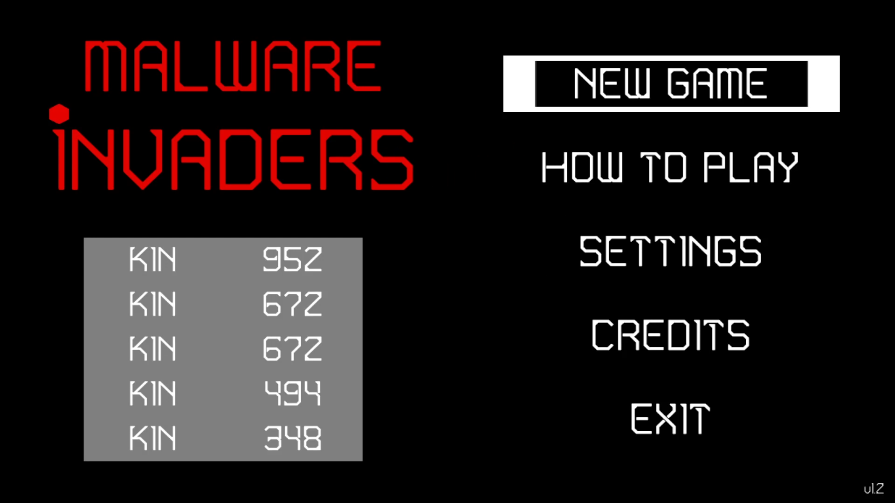

Proyecto
Proyecto 2D propuesto para finalizar el curso. Las pautas eran simples, proyecto 2D inspirado en los shoot'em up clásicos como 'Space Invaders', donde los enemigos van desde la parte superior de la pantalla hacia abajo y cuyo objetivo es derrotarlos a todos, en éste caso, el jugador sólo dispondría de una bala en pantalla.

Descripción y contexto
El proyecto tenía como requisitos ser 2D, estar inspirado en 'Space Invaders' y que el jugador sólo tuviese una bala disponible en pantalla.
Dado que mi proyecto para finalizar el grado superior fue algo bastante parecido, tuve claro cual sería el camino a seguir, aunque no querí hacer el mismo juego de nuevo pero utilizando un motor distinto y aunque las mecánicas base eran prácticamente las mismas, los cambios que se acabaron implementando fueron: · Se abandona el estilo pixel-art y se adopta un estilo artístico que opta por formas simples y colores muy vivos. · Fuente de texto mucho más estilizada. · Las oleadas de enemigos spawnean en un bloque de 8x4, todos a la vez y ahora es necesario derrotar 3 oleadas para completar el juego. · Cada oleada, los enemigos son más rápidos y pequeñ. Comforme vas avanzando hacia abajo, ganará velocidad. · Ahora los enemigos tienen una animación de pre-ataque, haciando así que el jugador sepa en todo momento cuando está en peligro. · Esta vez, el formato del sistema de puntuaciones es de tabla, donde se pueden registrar las mejores de distintas personas introduciendo 3 caracteres, como en las recreativas. · Multiplicador de puntuación (combos), que se activa y va aumentando conforme se alcanza consecutivamente a los enemigos. · Los enemigos ya no sueltan items curativos, en su lugar se utiliza el sistema de combos que hace que se gane un punto de vida si se consigue un combo de x5 o alguno de sus múltiplos (es decir, si el jugador tiene un punto de vida podrá recuperar los dos restantes juntos al conseguir un combo de x5 y x10, o realizando dos combos de x5).
AVISO: El siguiente video contiene luces parpadeantes.